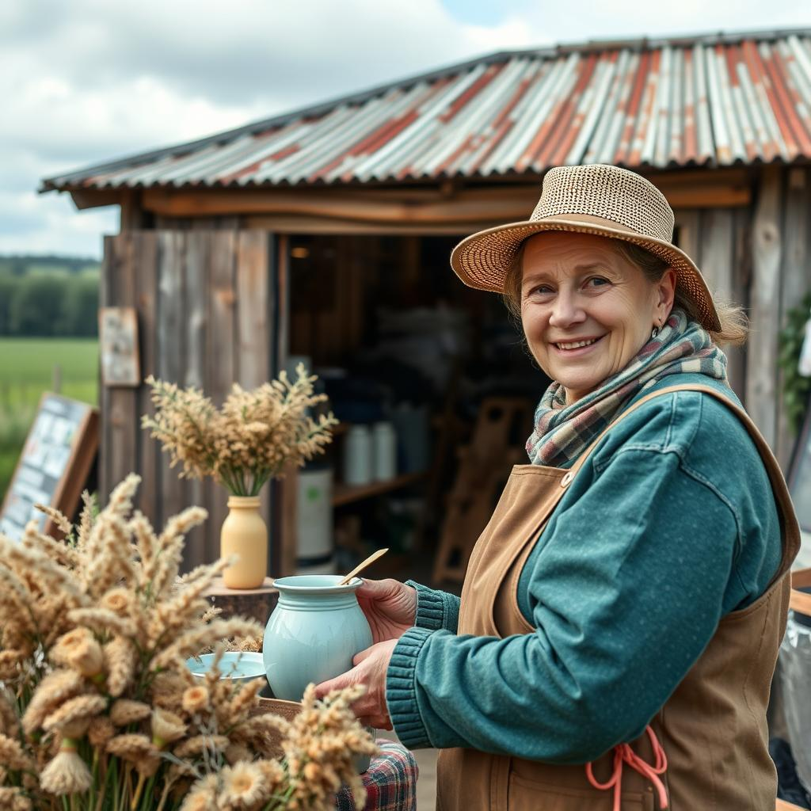
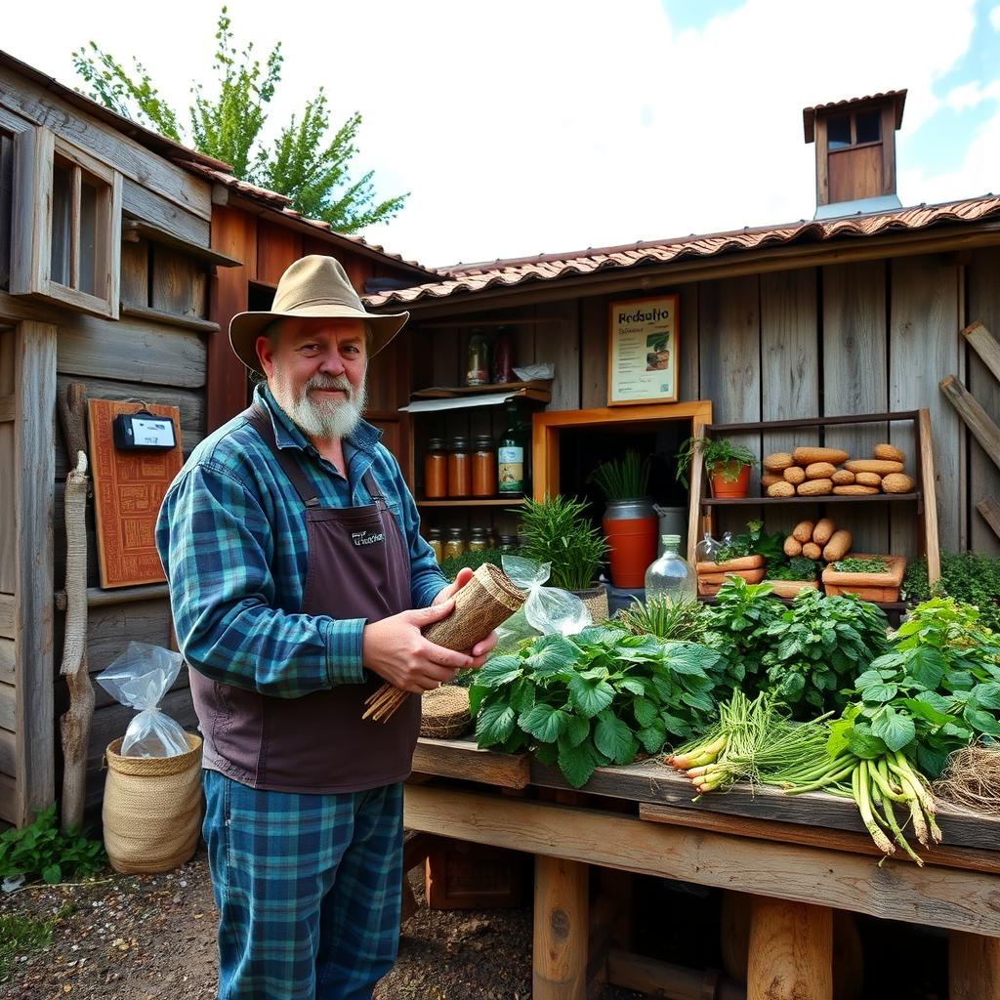
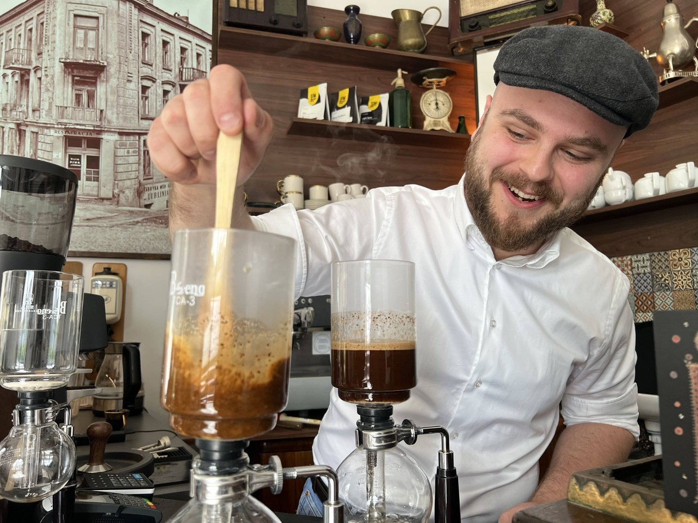

O nas
Kawiarnia Ekologiczna to miejsce stworzone z pasji do natury, zdrowego stylu życia i doskonałej kawy. Nasza misja to oferowanie smacznych, ekologicznych produktów, które wspierają zarówno lokalnych producentów, jak i zrównoważony rozwój.
Nasza misja
Naszym celem jest nie tylko oferowanie pysznych napojów i jedzenia, ale również promowanie odpowiedzialnego, ekologicznego stylu życia, który łączy ludzi i dba o naszą planetę.
Dlaczego jesteśmy wyjątkowi?
Ekologiczne składniki
Wszystkie nasze produkty przygotowujemy z certyfikowanych składników organicznych.
Wsparcie lokalnych dostawców
Współpracujemy z małymi gospodarstwami i rzemieślnikami z regionu.
Zero waste
Stosujemy biodegradowalne opakowania i dążymy do ograniczenia plastiku w naszej działalności.
Nasz zespół
Tworzymy mały, ale zgrany zespół pasjonatów ekologii, którzy codziennie dbają o Twoje doświadczenie w naszej kawiarni. Razem tworzymy miejsce pełne ciepła i wspólnoty.